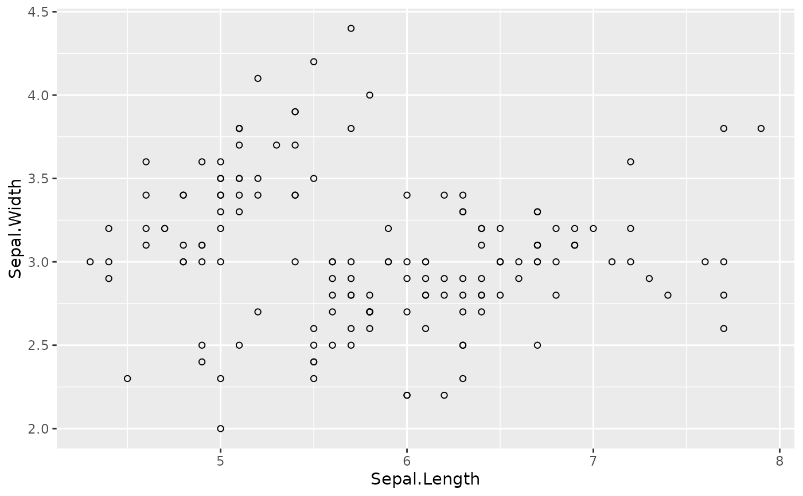

A type maps a short name ("point", "line", "bar", ...) to a
ggplot2 geometry plus default parameters. Types live in a registry, so you
can add your own with kgg_register_type().
Arguments
- name
Name of the type.
- geom
A function building a ggplot2 layer, e.g. ggplot2::geom_point. It is called with
mapping,dataand the layer parameters.- params
Default parameters passed to
geom.- univariate
If
TRUE, the type summarises one variable (histogram, density, ...):yis ignored and used asxwhenxis missing.- series
Aesthetic (
"colour"or"fill") mapped to the series name when severalyvariables are plotted, or"none"for no default mapping (e.g. black error bars).- extra
Optional function without argument returning an extra ggplot2 component (scale, limits, ...) added with the layer.
- free
If
TRUE,xandyare optional and the layer gives no axis title (e.g.blank).- intercept
"xintercept"or"yintercept"for a reference line type: the layer reads that aesthetic instead ofxandy.
Value
kgg_register_type() returns name invisibly; kgg_types() a
character vector of the registered types.
Details
Built-in types: point, jitter, line, path, step, area,
smooth, text, bar (alias col), bar_dodge, count, histogram,
density, ecdf (alias cumFreq), boxplot, violin, convexhull
(needs the ggConvexHull package), and
ribbon: a band betweenyminandymax, filled with the series colour (alpha = 0.2, no outline);pointrangeanderrorbar: a point (y) with its range (ymin,ymax), black and not coloured by series;hlineandvline: reference lines atyintercept/xintercept(seekgg_hline()andkgg_vline());blank: draws nothing but trains the scales, to force the limits of some panels (seekgg_limits()).
Examples
kgg_types()
#> [1] "point" "jitter" "line" "path" "step"
#> [6] "area" "smooth" "text" "bar" "col"
#> [11] "bar_dodge" "count" "histogram" "density" "ecdf"
#> [16] "cumFreq" "boxplot" "violin" "ribbon" "pointrange"
#> [21] "errorbar" "hline" "vline" "blank" "sf"
#> [26] "convexhull"
kgg_register_type("hollow", ggplot2::geom_point, params = list(shape = 1))
kggplot(iris, "Sepal.Length", "Sepal.Width", type = "hollow")
